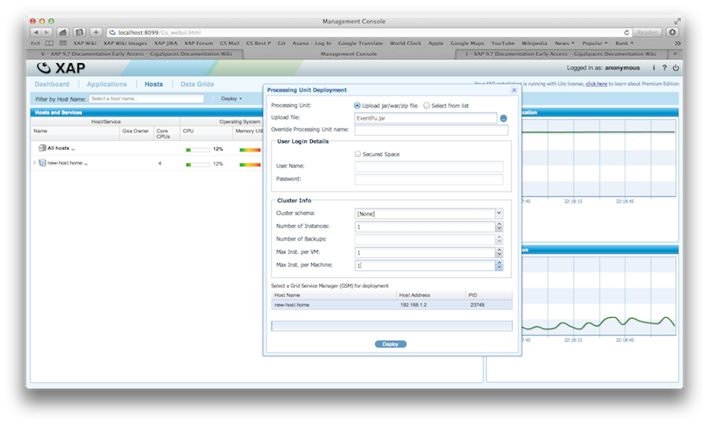
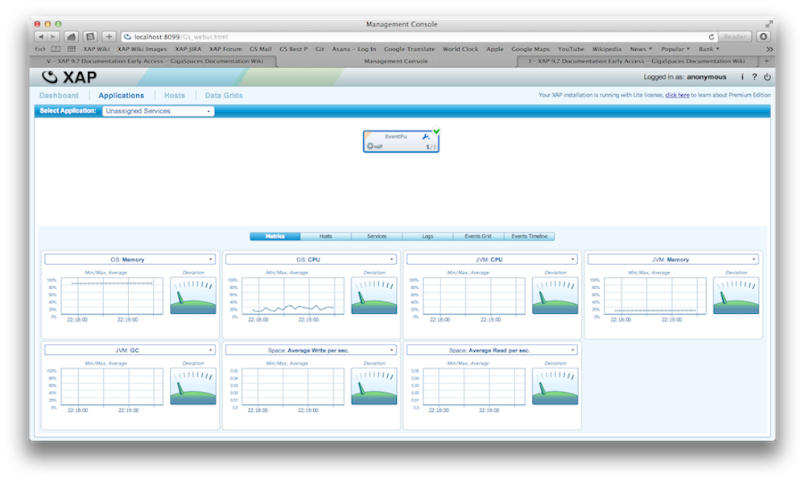
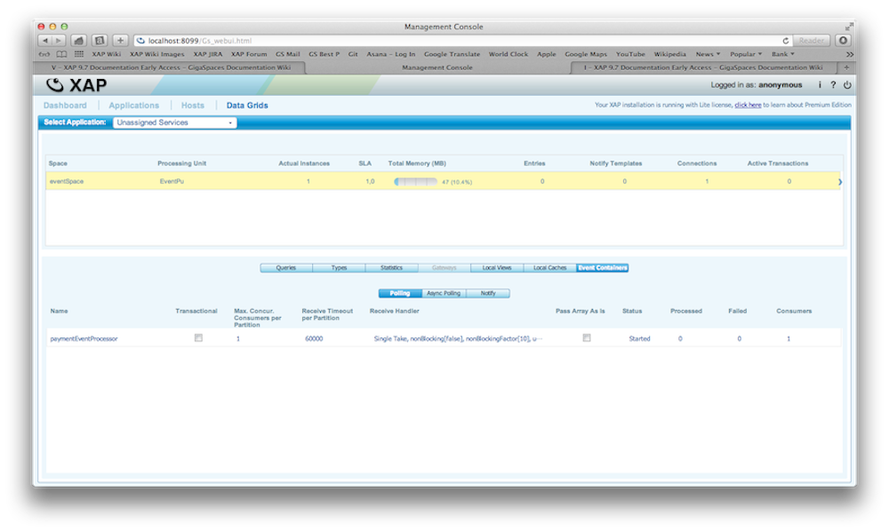
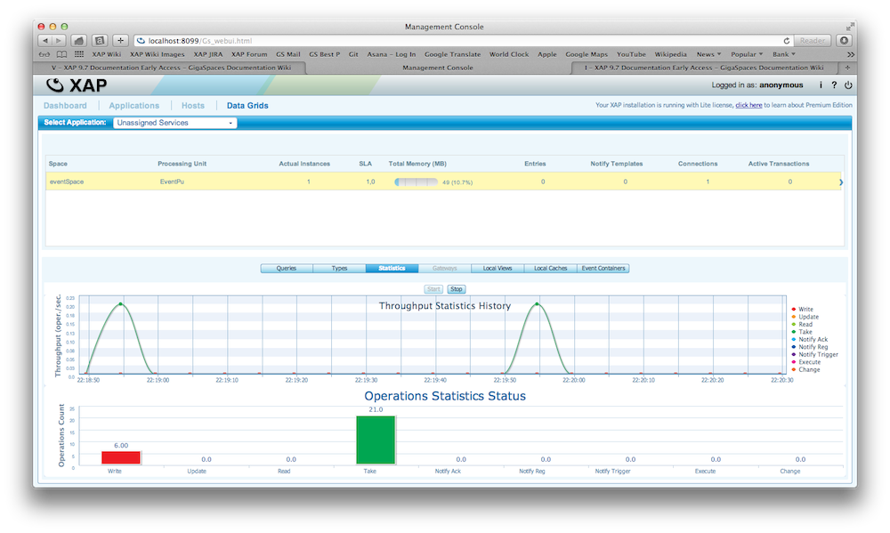

The PU is the fundamental unit of deployment in
There are two types of Processing Unit Containers:
Integrated Processing Unit Container A container that runs the PU inside an IDE (e.g. IntelliJ IDEA, Eclipse). The integrated processing unit container enables to run the PU inside your IDE for testing and debugging purposes.
Service Grid Processing Unit Container A Processing Unit Container which runs within a Grid Service Container. It enables running the PU within a service grid, which provides self-healing and SLA capabilities to components deployed on it.
The PU is a deployable, independent, scalable unit, which is the building block for the Space Based Architecture (SBA). The PU is a combination of service beans and/or an embedded space instance. The artifacts that belong to a PU are packaged as a JAR or WAR file.
There are several types of PUs; data only, business-logic only, mixed PUs (which contain both data and business logic) and special purpose PUs.
This type of PU does not include any business logic, only a Space. The PU simply defines the runtime characteristics of the space, i.e. its runtime topology, the number of space replicas/partitions, etc.
The Business-logic Only PU implements your application code, and does not include any data. Typically, your code interacts with a remote Space which is defined by another PU. By defining the PU as business logic only, you create an application server which is hosted and monitored by the Service Grid. The application can be a typical Spring application deployed to a
This type of PU's includes both business logic and a space. Typically, the business logic interacts with a local space instance (i.e. a data grid instance running within the same PU instance) to achieve lowest possible latency and best performance.
An Elastic Processing Unit (EPU) is a Processing Unit with additional capabilities that simplify its deployment across multiple machines. Containers and machine resources such as Memory and CPU are automatically provisioned based on Memory and CPU requirements. When a machine failure occurs, or when scale requirements change, new machines are provisioned and the Processing Unit deployment distribution is balanced automatically. The PU scale is triggered by modifying the requirements through an API call. From that point in time the EPU continuously maintains the specified capacity (indefinitely, or until the next scale trigger).
For more information, see the Elastic Processing Unit topic in the developer guide.
For more information, see the Web Application Support section in the developer guide.
For more information, see the Mule ESB Integration section in the developer guide.
Much like a JEE web application or an OSGi bundle, The PU is packaged as a .jar file and follows a certain directory structure which enables the
|----META-INF
|--------spring
|------------pu.xml
|------------pu.properties
|------------sla.xml
|--------MANIFEST.MF
|----xap
|--------tutorial
|------------model
|----------------Payment.class
|----------------User.class
|----lib
|--------hibernateThe PU JAR file is composed of several key elements:
META-INF/spring/pu.xml (mandatory): This is the PU's deployment descriptor, which is in fact a Spring context XML configuration with a number of
META-INF/spring/sla.xml (not mandatory): This file contains SLA definitions for the PU (i.e. number of instances, number of backup and deployment requirements). Note that this is optional, and can be replaced with an <os:sla> definition in the pu.xml file. If neither is present, the default SLA will be applied. SLA definitions can also be specified at the deploy time via command line arguments.
META-INF/spring/pu.properties (not mandatory): Enables you to externalize properties included in the pu.xml file (e.g. database connection username and password), and also set system-level deployment properties and overrides, such as JEE related deployment properties.
User class files: Your processing unit's classes (here under the xap.tutorial package)
lib: Other JARson which your PU depends.
META-INF/MANIFEST.MF (not mandatory): This file could be used for adding additional jars to the PU classpath, using the standard MANIFEST.MF Class-Path property.
This file is a Spring framework XML configuration file. It leverages the Spring framework IoC container and extends it by using the Spring custom namespace mechanism.
The definitions in the pu.xml file are divided into 2 major categories:
GigaSpaces specific components, such as space, event containers or remote service exporters.
User-defined beans, which define instances of user classes to be used by the PU. For example, user defined event handlers to which the event containers delegate events as those are received.
Here is an example of a pu.xml file:
<?xml version="1.0" encoding="UTF-8"?>
<!--
top level element of the Spring configuration. Note the multiple namespace definition for both GigaSpaces and Spring.
-->
<beans xmlns="http://www.springframework.org/schema/beans"
xmlns:xsi="http://www.w3.org/2001/XMLSchema-instance"
xmlns:context="http://www.springframework.org/schema/context"
xmlns:os-core="http://www.openspaces.org/schema/core"
xmlns:os-events="http://www.openspaces.org/schema/events"
xmlns:os-remoting="http://www.openspaces.org/schema/remoting"
xmlns:os-sla="http://www.openspaces.org/schema/sla"
xsi:schemaLocation="
http://www.springframework.org/schema/beans http://www.springframework.org/schema/beans/spring-beans-[%=Versions.spring-short%].xsd
http://www.springframework.org/schema/context http://www.springframework.org/schema/context/spring-context-[%=Versions.spring-short%].xsd
http://www.openspaces.org/schema/core http://www.openspaces.org/schema/[%=Versions.product-version-short%]/core/openspaces-core.xsd
http://www.openspaces.org/schema/events http://www.openspaces.org/schema/[%=Versions.product-version-short%]/events/openspaces-events.xsd
http://www.openspaces.org/schema/remoting http://www.openspaces.org/schema/[%=Versions.product-version-short%]/remoting/openspaces-remoting.xsd
http://www.openspaces.org/schema/sla http://www.openspaces.org/schema/[%=Versions.product-version-short%]/sla/openspaces-sla.xsd">
<!-- Enables to configure Spring beans through annotations -->
<context:annotation-config />
<!-- Enable OpenSpaces core annotation support. -->
<os-core:annotation-support />
<!-- Enables using @Polling and @Notify annotations to creating polling and notify containers -->
<os-events:annotation-support />
<!-- Enables using @RemotingService and other remoting related annotations -->
<os-remoting:annotation-support />
<!--
A bean representing a space. Here we configure an embedded space (note the url element which does
not contain any remote protocol prefix. Also note that we do not specify here the cluster topology
of the space. It is declared by the os-sla:sla element of this pu.xml file.
-->
<os-core:embedded-space id="space" space-name="eventSpace" />
<!-- Define the GigaSpace instance that the application will use to access the space -->
<os-core:giga-space id="eventSpace" space="space"/>
</beans>
<?xml version="1.0" encoding="UTF-8"?>
<!--
top level element of the Spring configuration. Note the multiple namespace definition for both GigaSpaces and Spring.
-->
<beans xmlns="http://www.springframework.org/schema/beans"
xmlns:xsi="http://www.w3.org/2001/XMLSchema-instance"
xmlns:context="http://www.springframework.org/schema/context"
xmlns:os-core="http://www.openspaces.org/schema/core"
xmlns:os-events="http://www.openspaces.org/schema/events"
xmlns:os-remoting="http://www.openspaces.org/schema/remoting"
xmlns:os-sla="http://www.openspaces.org/schema/sla"
xsi:schemaLocation="
http://www.springframework.org/schema/beans http://www.springframework.org/schema/beans/spring-beans.xsd
http://www.springframework.org/schema/context http://www.springframework.org/schema/context/spring-context.xsd
http://www.openspaces.org/schema/core http://www.openspaces.org/schema/[%=Versions.product-version-short%]/core/openspaces-core.xsd
http://www.openspaces.org/schema/events http://www.openspaces.org/schema/[%=Versions.product-version-short%]/events/openspaces-events.xsd
http://www.openspaces.org/schema/remoting http://www.openspaces.org/schema/[%=Versions.product-version-short%]/remoting/openspaces-remoting.xsd
http://www.openspaces.org/schema/sla http://www.openspaces.org/schema/[%=Versions.product-version-short%]/sla/openspaces-sla.xsd">
<!-- Enables to configure Spring beans through annotations -->
<context:annotation-config />
<!-- Enable OpenSpaces core annotation support. -->
<os-core:annotation-support />
<!-- Enables using @Polling and @Notify annotations to creating polling and notify containers -->
<os-events:annotation-support />
<!-- Enables using @RemotingService and other remoting related annotations -->
<os-remoting:annotation-support />
<!--
A bean representing a space. Here we configure an embedded space (note the url element which does
not contain any remote protocol prefix. Also note that we do not specify here the cluster topology
of the space. It is declared by the os-sla:sla element of this pu.xml file.
-->
<os-core:embedded-space id="space" space-name="eventSpace" />
<!-- Define the GigaSpace instance that the application will use to access the space -->
<os-core:giga-space id="eventSpace" space="space"/>
</beans>
For more information, see the Configuration page in the Processing Unit section of the developer guide.
The SLA definitions can be provided as part of the PU package or during the PU's deployment process. They define the number of PU instances that should be running and deploy-time requirements such as clustering topology for PU's which contain a space. The GSM reads the SLA definition, and deploys the PU onto the available GSCs according to it. A sample SLA definition is shown below:
<beans xmlns="http://www.springframework.org/schema/beans"
xmlns:xsi="http://www.w3.org/2001/XMLSchema-instance"
xmlns:os-sla="http://www.openspaces.org/schema/sla"
xsi:schemaLocation="http://www.springframework.org/schema/beans
http://www.springframework.org/schema/beans/spring-beans-[%=Versions.spring-short%].xsd
http://www.openspaces.org/schema/sla http://www.openspaces.org/schema/[%=Versions.product-version-short%]/sla/openspaces-sla.xsd">
<os-sla:sla cluster-schema="partitioned"
number-of-instances="2" number-of-backups="1"The number of backups per partition is zero or one.
max-instances-per-vm="1">
</os-sla:sla>
</beans>
<beans xmlns="http://www.springframework.org/schema/beans"
xmlns:xsi="http://www.w3.org/2001/XMLSchema-instance"
xmlns:os-sla="http://www.openspaces.org/schema/sla"
xsi:schemaLocation="http://www.springframework.org/schema/beans
http://www.springframework.org/schema/beans/spring-beans.xsd
http://www.openspaces.org/schema/sla http://www.openspaces.org/schema/[%=Versions.product-version-short%]/sla/openspaces-sla.xsd">
<os-sla:sla cluster-schema="partitioned"
number-of-instances="2" number-of-backups="1"The number of backups per partition is zero or one.
max-instances-per-vm="1">
</os-sla:sla>
</beans>
For more information, see the Service Level Agreement (SLA) section in the Administration guide.
When deploying the PU to the
Each GSC to which a certain instance was provisioned, downloads the PU JAR file from the GSM, extracts it to its local working directory (located by default under
Our Online Payment system is expected to handle a large amount of concurrent users performing transactions. The system also needs to be highly available. This is where
First we define a polling container that will handle the business logic upon receiving a payment event. In our example we define a polling container that will receive events when a new payment is created:
@EventDriven
@Polling
@NotifyType(write = true)
public class PaymentProcessor {
// Define the event we are interested in
@EventTemplate
Payment unprocessedData() {
Payment template = new Payment();
template.setStatus(ETransactionStatus.NEW);
return template;
}
@SpaceDataEvent
public Payment eventListener(Payment event) {
System.out.println("Payment received; processing .....");
// set the status on the event and write it back into the space
event.setStatus(ETransactionStatus.PROCESSED);
return event;
}
}
In this step will create the configuration file for the PU deployment.
<?xml version="1.0" encoding="UTF-8"?>
<beans xmlns="http://www.springframework.org/schema/beans"
xmlns:xsi="http://www.w3.org/2001/XMLSchema-instance" xmlns:context="http://www.springframework.org/schema/context"
xmlns:os-core="http://www.openspaces.org/schema/core" xmlns:os-events="http://www.openspaces.org/schema/events"
xmlns:os-remoting="http://www.openspaces.org/schema/remoting"
xmlns:os-sla="http://www.openspaces.org/schema/sla"
xsi:schemaLocation="
http://www.springframework.org/schema/beans http://www.springframework.org/schema/beans/spring-beans-[%=Versions.spring-short%].xsd
http://www.springframework.org/schema/context http://www.springframework.org/schema/context/spring-context-[%=Versions.spring-short%].xsd
http://www.openspaces.org/schema/core http://www.openspaces.org/schema/[%=Versions.product-version-short%]/core/openspaces-core.xsd
http://www.openspaces.org/schema/events http://www.openspaces.org/schema/[%=Versions.product-version-short%]/events/openspaces-events.xsd
http://www.openspaces.org/schema/remoting http://www.openspaces.org/schema/[%=Versions.product-version-short%]/remoting/openspaces-remoting.xsd
http://www.openspaces.org/schema/sla http://www.openspaces.org/schema/[%=Versions.product-version-short%]/sla/openspaces-sla.xsd">
<!-- Scan the packages for annotations / -->
<context:component-scan base-package="xap" />
<!-- Enables to configure Spring beans through annotations -->
<context:annotation-config />
<!-- Enable @PostPrimary and others annotation support. -->
<os-core:annotation-support />
<!-- Enables using @Polling and @Notify annotations to creating polling and notify containers -->
<os-events:annotation-support />
<!-- Enables using @RemotingService and other remoting related annotations -->
<os-remoting:annotation-support />
<!-- A bean representing a space (an IJSpace implementation) -->
<os-core:embedded-space id="space" space-name="eventSpace" />
<!-- Define the GigaSpace instance that the application will use to access the space -->
<os-core:giga-space id="eventSpace" space="space"/>
</beans>
<?xml version="1.0" encoding="UTF-8"?>
<beans xmlns="http://www.springframework.org/schema/beans"
xmlns:xsi="http://www.w3.org/2001/XMLSchema-instance" xmlns:context="http://www.springframework.org/schema/context"
xmlns:os-core="http://www.openspaces.org/schema/core" xmlns:os-events="http://www.openspaces.org/schema/events"
xmlns:os-remoting="http://www.openspaces.org/schema/remoting"
xmlns:os-sla="http://www.openspaces.org/schema/sla"
xsi:schemaLocation="
http://www.springframework.org/schema/beans http://www.springframework.org/schema/beans/spring-beans.xsd
http://www.springframework.org/schema/context http://www.springframework.org/schema/context/spring-context.xsd
http://www.openspaces.org/schema/core http://www.openspaces.org/schema/[%=Versions.product-version-short%]/core/openspaces-core.xsd
http://www.openspaces.org/schema/events http://www.openspaces.org/schema/[%=Versions.product-version-short%]/events/openspaces-events.xsd
http://www.openspaces.org/schema/remoting http://www.openspaces.org/schema/[%=Versions.product-version-short%]/remoting/openspaces-remoting.xsd
http://www.openspaces.org/schema/sla http://www.openspaces.org/schema/[%=Versions.product-version-short%]/sla/openspaces-sla.xsd">
<!-- Scan the packages for annotations / -->
<context:component-scan base-package="xap" />
<!-- Enables to configure Spring beans through annotations -->
<context:annotation-config />
<!-- Enable @PostPrimary and others annotation support. -->
<os-core:annotation-support />
<!-- Enables using @Polling and @Notify annotations to creating polling and notify containers -->
<os-events:annotation-support />
<!-- Enables using @RemotingService and other remoting related annotations -->
<os-remoting:annotation-support />
<!-- A bean representing a space (an IJSpace implementation) -->
<os-core:embedded-space id="space" space-name="eventSpace" />
<!-- Define the GigaSpace instance that the application will use to access the space -->
<os-core:giga-space id="eventSpace" space="space"/>
</beans>
Now we have all the pieces that are necessary to create the JAR file for the PU. After we have created the JAR file its time to deploy the PU onto the data grid. Again, you can do this in three ways; by script, Java code or via the Web Managment Console. In our example will use the scripts to deploy the PU.
First we start the
# start the agent with the REST interface
# Windows
gs-agent.bat --manager-local --gsc=2
# Unix
./gs-agent.sh --manager-local --gsc=2
And now we deploy the PU onto the data grid:
GS_HOME\bin\gs.sh deploy eventPU.jar
curl -X POST --header 'Content-Type: application/json' --header 'Accept: text/plain' -d '{
"name": "eventPU",
"resource": "...path..to\eventPU.jar"
}' 'http://localhost:8090/v1/deployments'
We assume that the JAR ar we created is named eventPU.jar.
If you start the Web Management Console, you will be able to see that through the deployment a space called eventSpace was created and a PU named with the JAR name.
Now its time to create a client that creates events and writes them into the space. We will attach a listener on the client side to the space that will receive events when the payment is processed.
@EventDriven
@Polling
@NotifyType(write = true)
public class ClientListener {
// Define the event we are interested in
@EventTemplate
Payment unprocessedData() {
Payment template = new Payment();
template.setStatus(ETransactionStatus.PROCESSED);
return template;
}
@SpaceDataEvent
public Payment eventListener(Payment event) {
System.out.println("Processed Payment received ");
return null;
}
}
public void postPayment() {
// Register the event handler on the Space
this.registerPollingListener();
// Create a payment
Payment payment = new Payment();
payment.setCreatedDate(new Date(System.currentTimeMillis()));
payment.setPayingAccountId(new Integer(1));
payment.setPaymentAmount(new Double(120.70));
// write the payment into the spaceO
space.write(payment);
}
public void registerPollingListener() {
Payment payment = new Payment();
payment.setStatus(ETransactionStatus.PROCESSED);
SimplePollingEventListenerContainer pollingEventListenerContainer = new SimplePollingContainerConfigurer(
space).eventListenerAnnotation(new ClientListener())
.pollingContainer();
pollingEventListenerContainer.start();
}
When you run this code you should see that the PU deployed onto the IMDG is processing the event, changes the status of the payment to PROCESSED and writes the event back into the space. The client then will receive an event because it has registered a listener that listens for processed payment events.
There is complete example available of a PU on GitHub. You can download, build and deploy this example. Here is an example how you deploy a PU with the Web Management Console.
|
Deploy PU  |
Applications deployed  |
Data Grid  |
Statistics  |
One of our non functional requirements for our online payment system is that it is highly available and it can handle a large amount of concurrent transactions. This can be accomplish in a couple of ways. We can deploy the PU with multiple concurrent threads and or multiple PU instances on top of the grid.
By default the PU is single threaded. With a simple annotation you can tell
@EventDriven
@Polling @Polling(concurrentConsumers = 3, maxConcurrentConsumers = 10)
@NotifyType(write = true)
public class PaymentProcessor {
}
Lets assume that we have two machines available for our deployment. We want to deploy 4 instances of our PU, two on each machine.
The deployment script for this scenario looks like this:
With a statefull PU, embedded space
./gs.sh deploy -cluster schema=partitioned total_members=4,0 -max-instances-per-machine 2 eventPU.jar
With a stateless PU
./gs.sh deploy -cluster total_members=4 -max-instances-per-machine 2 eventPU.jar
For more information, see the Deploy Command Line Interface topic in the Administration guide.